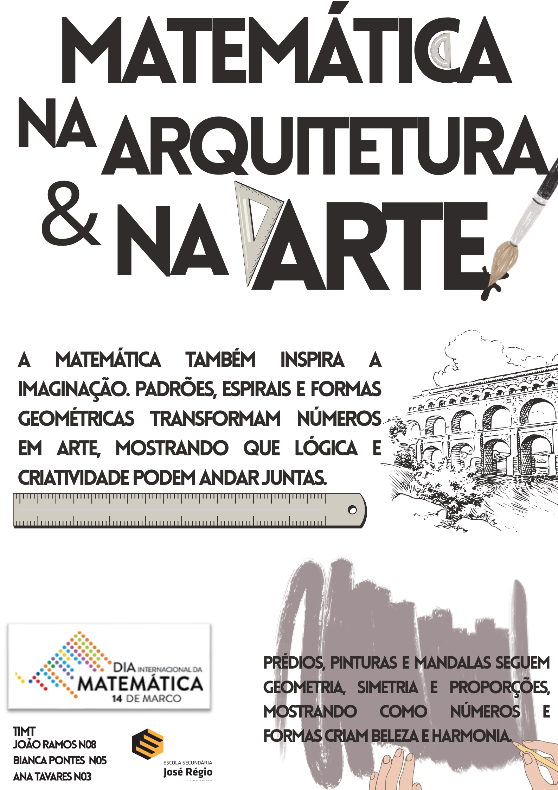
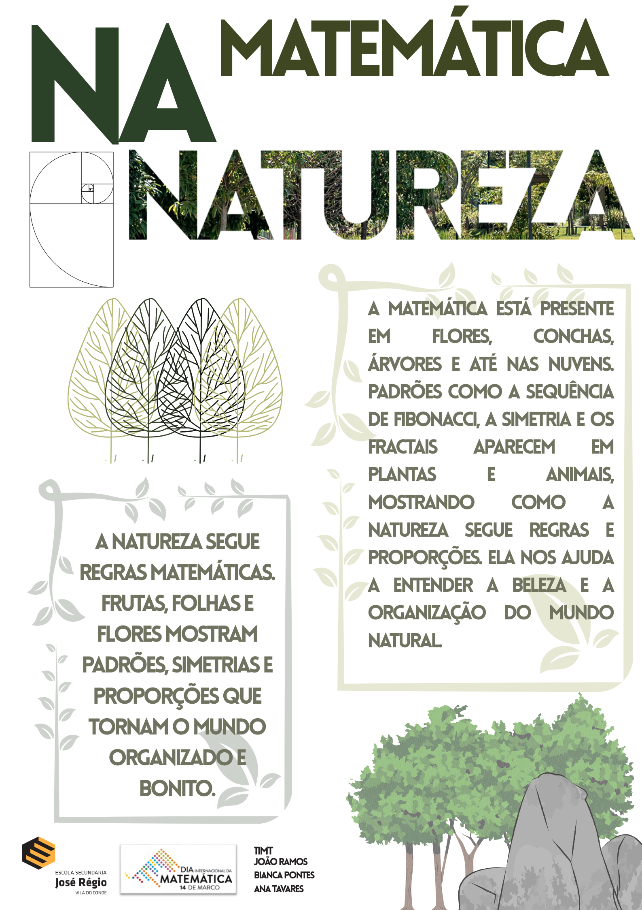
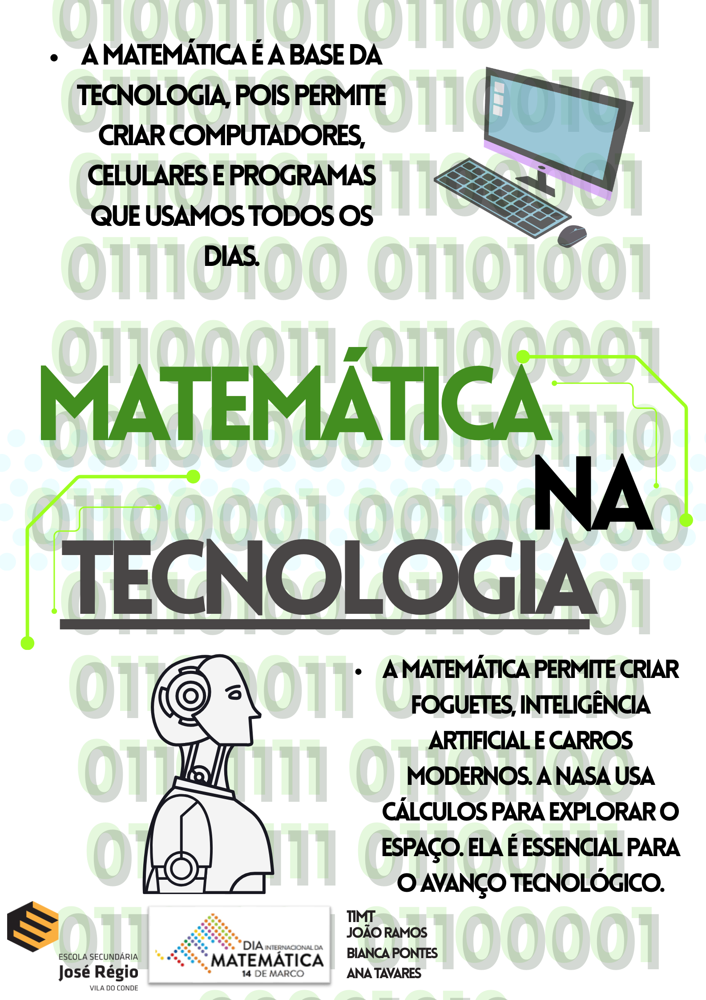

A Matemática e a tecnologia
A matemática está presente em várias tecnologias do nosso dia a dia, desde computadores até realidade virtual.



A matemática está presente em várias tecnologias do nosso dia a dia, desde computadores até realidade virtual.


